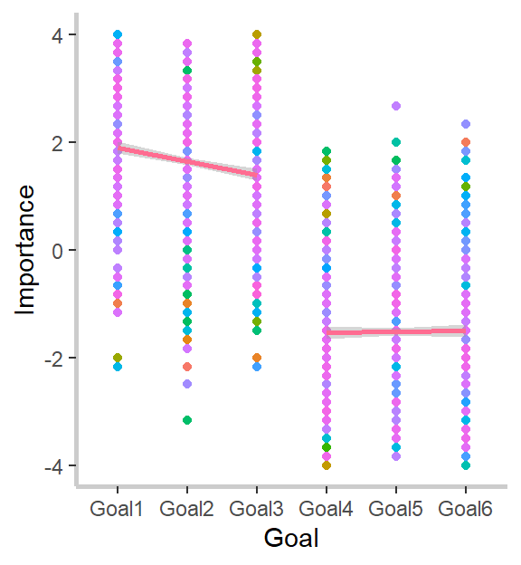

Rationale of this study
Interpersonal trust is an important facet of relationships, but current theories and research paradigms on interpersonal trust may be incomplete. Trust has traditionally been studied as either a trait of the individual or a facet of a specific relationship between two people. Although both approaches highlight different and important aspects of the psychology of trust, both approaches are limited in their ability to uncover more minute dynamics.
In my dissertation, I proposed and tested a goal-specific theory of interpersonal trust, the Interdependent Goal Model of Interpersonal Trust (IGM). I argued that the trust between two people varies across the interdependent goals that are shared within a relationship and that this variability is important for understanding interpersonal relationships. If trust does vary meaningfully within a given relationship, then trait and relationship paradigms of interpersonal trust will be inappropriate to investigate this variability.
Testing the hypotheses derived from the IGM required a methodology sensitive to the idiosyncratic goals and relationships of the participants. To this end, I employed a novel and ideographically-tailored survey in which participants described their current goals and best friend. After participants described their goals and best friend, they were asked to what extent they would trust their best friend across some of their most and least important goals.
The IGM and associated research paradigm is a promising orientation to interpersonal trust. Intra-relational trust varies across the interdependent goals that are shared within a relationship, and this variability is predictable. More research is needed to better understand how trust operates within a relationship.
On this page, I will walk you through the logic and main findings of my dissertation, including all necessary data pre-processing steps and my analyses.
Hypotheses
The first major premise of the IGM is that trust is inherently instrumental for the individual’s goal pursuit. Specifically, the IGM argues that an important prototype of trust is the willingness of a person to rely on another for the achievement of a desired end and therefore is in preparation of an act of social risk taking. Consequently, people should be sensitive to the probability of goal attainment that is associated with relying on a particular person for a particular goal. In other words, people should be more likely to trust another person if they believe they are competent to perform the task at hand and less likely to trust another person if they believe they are incompetent to perform the task. The first hypothesis of the present study is that interpersonal trust will increase as the relevance of a best friend’s strength to a given task increases, and interpersonal trust will decrease as the relevance of a best friend’s weakness to a given task increases.
The second major premise of the IGM is that trust is not merely a calculative decision in a one-shot interaction. Instead, trust is the result of a push and pull between the importance the individual places in the goal versus the importance of the relationship with the trustee. Although people should calibrate their trust relative to the demands of the goal, some relational partners allow the individual to pursue more and more valued goals (Orehek et al., 2018a). For those relationships, the individual may be more likely to trust them across a range of goals, even if they are not perceived as the best-suited for the tasks, because doing so makes the trustee feel valued (Inagaki & Orehek, 2017). However, as the importance of accomplishing the goal increases for the trustor, they may again become more selective in their choice of trustee. Therefore, the second hypothesis of the present study is that individuals will place lower trust in another person on average across a range of highly important goals relative to goals of lower importance.
Combining the above premises suggests that the lower trust in relational partners across more important goals will be driven by the trustor being more selective in whom they trust for those important goals. That is, people will not simply lower their trust in their best friend, for example, across their most important goals simply because those goals are important. Instead, the lower trust should be explained by the trustor relying on the relational partner for goals the trustor believes could be accomplished with the help of the trustee and not relying on the relational partner for goals the trustor believes could not be accomplished with the help of the trustee. Specifically, the third hypothesis of the present study is that for more important goals, people will be more likely to trust an important relational partner (e.g., best friend) if they believe the trustee’s strengths are relevant to the task and less likely to trust that relational partner if they believe the trustee’s weaknesses are relevant to the task. For goals that are less important, beliefs about the trustee’s strengths and weaknesses will be less relevant.
Survey Methodology Overview
In order to understand any analysis, it’s important to first understand the data generation process. In the case of these data, participants completed an idiographically-tailored survey.
A traditional survey uses what’s called a nomothetic approach, which aims to understand how groups of people act. These are the kinds of surveys people take all the time. For example, if you’ve ever completed a customer satisfaction survey that asked you questions like “On a scale of 1 to 5, how satisfied were you with the service you received?”, then you have completed a nomothetically-designed survey. By contrast, an idiographic approach aims to understand the idiosyncracies of the individual. An example of an idiographically-designed customer satisfaction survey question might be something more along the lines of “What was the most important part of the service you received for why you gave the rating you did?”, with an open-ended text box for people to write in their response.
In idiographically-tailored survey from which we got our data, participants were asked about their goals and their best friend. Specifically, participants first listed the goals they were currently pursuing, and then they were asked to select their three most and three least important goals. Next, participants were asked to identify their best friend and their best friend’s most descriptive strength and weakness. Afterwards, participants were asked to what extent their best friend’s most descriptive strength and weakness were relevant to each of the participants’ three most and three least important goals. Finally, participants were asked to what extent they would trust their best friend across their three most and three least important goals. The criterion variable of this study, or the thing we want to predict, is the trust participants placed in their best friend across those six goals.
Data Pre-processing
The first step in analyzing data in R is to set your working environment and then load your data and required packages. I have already done that in the background, so I encourage you to download the code for this page if you would like to see that step. I will only show one example of code for each pre-processing step to save prcious internet space.
After you’ve set up your enviornment you can start pre-processing your data to get it into the necessary format for analyses. Below, I create a participant identification number (PIN) and set it as a factor. Then I rename the variables that identify exactly how important, on a 1 to 10 scale, participants viewed their three most and three least important goals.
# Creating a PIN
data1$PIN<-seq(from=1, to=length(data1$Progress))
# Setting the variable as a factor for analyses
data1$PIN<-as.factor(data1$PIN)
## Creating variables for the continuous measure of goal importance
# Most Important Goals
data1$g1Imp<-(as.numeric(data1$Q5.2)-1)
Next, I have to create the variables that indicate to what extent participants’ best friend’s most descriptive strength and weakness were to each of the six goals. Here is where we come across our first coding challenge.
Because this survey was idiographically-tailored, and participants could have identified anywhere from 6 to 25 goals, these data are what’s known as sparse. Sparse data has a lot of empty cells, and this was one of the sparsest data sets I’ve ever worked with. In this case, there was a single value for every participant scattered across 33 columns! I mean, take a look at this hot mess!
head(data1[, 1311:1345])
## Q14.1_1 Q14.1_1_TEXT Q14.1_2 Q14.1_2_TEXT Q14.1_3 Q14.1_3_TEXT Q14.1_4
## 1 4 NA NA NA NA NA NA
## 2 2 NA NA NA NA NA NA
## 3 NA NA NA NA 3 NA NA
## 4 NA NA NA NA NA NA NA
## 5 1 NA NA NA NA NA NA
## 6 NA NA NA NA NA NA 1
## Q14.1_4_TEXT Q14.1_5 Q14.1_5_TEXT Q14.1_6 Q14.1_7 Q14.1_8 Q14.1_9 Q14.1_10
## 1 NA NA NA NA NA NA NA NA
## 2 NA NA NA NA NA NA NA NA
## 3 NA NA NA NA NA NA NA NA
## 4 NA NA NA NA 5 NA NA NA
## 5 NA NA NA NA NA NA NA NA
## 6 NA NA NA NA NA NA NA NA
## Q14.1_11 Q14.1_12 Q14.1_13 Q14.1_14 Q14.1_15 Q14.1_16 Q14.1_17 Q14.1_18
## 1 NA NA NA NA NA NA NA NA
## 2 NA NA NA NA NA NA NA NA
## 3 NA NA NA NA NA NA NA NA
## 4 NA NA NA NA NA NA NA NA
## 5 NA NA NA NA NA NA NA NA
## 6 NA NA NA NA NA NA NA NA
## Q14.1_19 Q14.1_20 Q14.1_21 Q14.1_22 Q14.1_23 Q14.1_24 Q14.1_25 Q14.1_26
## 1 NA NA NA NA NA NA NA NA
## 2 NA NA NA NA NA NA NA NA
## 3 NA NA NA NA NA NA NA NA
## 4 NA NA NA NA NA NA NA NA
## 5 NA NA NA NA NA NA NA NA
## 6 NA NA NA NA NA NA NA NA
## Q14.1_27 Q14.1_28 Q14.1_29 Q14.1_30
## 1 NA NA NA NA
## 2 NA NA NA NA
## 3 NA NA NA NA
## 4 NA NA NA NA
## 5 NA NA NA NA
## 6 NA NA NA NA
Here is the code I used to condense that sparse data into a set of variables so that every participants’ value was included in a single variable.
### Creating Goal Relevance Variables
## Most Important Goals ##########
# Goal 1 Strength
data1$Goal1StrRel<-(apply(data1[, 1311:1345], 1, function(x) x[!is.na(x)][1]))-1
The variables that contained participants’ trust in their best friend across each goal was similarly sparse, so I simply applied the same code to fix that here. However, the measures for goal-specific trust were a bit more complicated, so they require more code. Specifically, participants were first asked if they trusted their best friend or not for each goal, and then they were asked to what extent they trusted or distrusted their best friend, depending on whether they first selcted trust or distrust. Because we was a continuous measure for our analyses, we need to somehow combine those extent variables with the dichotomous measure. Below is the code for how I accomplished that.
### Creating Goal-Based Trust DVs ###
## Trust for Project 1
# Trust
data1$Goal1TrustDi<-(apply(data1[, 1731:1765], 1, function(x) x[!is.na(x)][1]))
# Extent Ss Trusts Best Friend for Project 1
data1$G1TrustExt<-as.numeric(data1$Q26.2)
# Extent Ss distrusts Best Friend for Project 1
data1$G1DistrustExt<-as.numeric(-data1$Q26.3)
# Lean Toward Trust vs Distrust
data1$G1TrustLean<-as.numeric(data1$Q26.4)
# Creating bipolar measure of Trust-Distrust
data1$Goal1TrustBP<-ifelse(data1$Goal1TrustDi==1,data1$G1TrustExt,
ifelse(data1$Goal1TrustDi==2,data1$G1DistrustExt,
ifelse(data1$G1TrustLean==1,1,
ifelse(data1$G1TrustLean==2,-1,NA))))
# Rely
data1$Goal1RelyDi<-(apply(data1[, 1769:1803], 1, function(x) x[!is.na(x)][1]))
# Extent Ss Trusts Best Friend for Project 1
data1$G1RelyExt<-as.numeric(data1$Q26.6)
# Extent Ss distrusts Best Friend for Project 1
data1$G1UnrelyDiExt<-as.numeric(-data1$Q26.7)
# Lean Toward Trust vs Distrust
data1$G1RelyLean<-as.numeric(data1$Q26.8)
# Creating bipolar measure of Trust-Distrust
data1$Goal1RelyBP<-ifelse(data1$Goal1RelyDi==1,data1$G1RelyExt,
ifelse(data1$Goal1RelyDi==2,data1$G1UnrelyDiExt,
ifelse(data1$G1RelyLean==1,1,
ifelse(data1$G1RelyLean==2,-1,NA))))
Whew!! That’s a lot! But we’re almost done. We have created our PIN, the continuous measure of goal mportance (for a manipulation check), the relevance of the best friend’s most descriptive strength and weakness to each goal, and the measure of goal-specific trust. All that is left is to create a subset of the data with only the variables that we need and to put it into the proper format.
Here, I subset the data and create the dataframme that I’ll use for plotting and my analyses
data2<-subset(data1,select=c(PIN:Goal1TrustDi,Goal1TrustBP,Goal1RelyDi,Goal1RelyBP,Goal2TrustDi,
Goal2TrustBP,Goal2RelyDi,Goal2RelyBP,Goal3TrustDi,Goal3TrustBP,Goal3RelyDi,
Goal3RelyBP,Goal4TrustDi,Goal4TrustBP,Goal4RelyDi,Goal4RelyBP,Goal5TrustDi,
Goal5TrustBP,Goal5RelyDi,Goal5RelyBP,Goal6TrustDi,Goal6TrustBP,Goal6RelyDi,
Goal6RelyBP))
Let’s check it to make sure everything worked properly
str(data2)
## 'data.frame': 399 obs. of 43 variables:
## $ PIN : Factor w/ 399 levels "1","2","3","4",..: 1 2 3 4 5 6 7 8 9 10 ...
## $ g1Imp : num 9 9 9 7 7 9 7 9 9 9 ...
## $ g2Imp : num 8 9 9 9 8 7 5 7 9 8 ...
## $ g3Imp : num 8 9 9 9 7 9 8 9 9 7 ...
## $ g4Imp : num 6 7 9 4 3 7 6 6 5 5 ...
## $ g5Imp : num 6 7 9 2 2 5 7 4 4 5 ...
## $ g6Imp : num 5 1 9 6 2 7 3 3 6 3 ...
## $ Goal1StrRel : num 3 1 2 4 0 0 0 4 3 0 ...
## $ Goal1WeakRel: num 0 1 0 0 0 0 0 2 2 4 ...
## $ Goal2StrRel : num 2 0 3 4 0 0 0 4 2 0 ...
## $ Goal2WeakRel: num 1 0 2 0 0 0 0 2 1 4 ...
## $ Goal3StrRel : num 0 2 0 1 0 0 2 4 2 0 ...
## $ Goal3WeakRel: num 0 0 0 0 0 0 0 2 1 4 ...
## $ Goal4StrRel : num 0 2 2 4 0 4 0 2 0 3 ...
## $ Goal4WeakRel: num 1 0 2 0 0 2 0 0 0 0 ...
## $ Goal5StrRel : num 2 0 4 2 0 4 0 2 0 0 ...
## $ Goal5WeakRel: num 0 0 3 0 0 0 0 0 0 4 ...
## $ Goal6StrRel : num 2 2 4 0 0 3 0 0 1 2 ...
## $ Goal6WeakRel: num 0 1 2 0 0 0 0 0 1 0 ...
## $ Goal1TrustDi: int 1 2 1 1 1 3 1 1 1 1 ...
## $ Goal1TrustBP: num 4 -3 3 4 2 1 3 4 2 4 ...
## $ Goal1RelyDi : int 1 3 3 1 2 1 1 1 3 1 ...
## $ Goal1RelyBP : num 4 -1 1 4 -2 3 2 4 1 4 ...
## $ Goal2TrustDi: int 1 2 1 1 3 1 3 1 1 1 ...
## $ Goal2TrustBP: num 4 -3 4 4 1 3 1 4 2 4 ...
## $ Goal2RelyDi : int 1 2 1 1 3 1 1 1 3 2 ...
## $ Goal2RelyBP : num 4 -3 3 4 1 3 2 4 -1 -2 ...
## $ Goal3TrustDi: int 1 1 2 2 3 2 1 1 1 2 ...
## $ Goal3TrustBP: num 4 2 -1 -1 1 -2 3 4 3 -2 ...
## $ Goal3RelyDi : int 1 1 3 2 3 2 1 1 1 2 ...
## $ Goal3RelyBP : num 4 3 -1 -1 1 -3 3 4 2 -2 ...
## $ Goal4TrustDi: int 1 1 1 1 2 1 3 1 3 1 ...
## $ Goal4TrustBP: num 3 2 4 4 -4 4 -1 3 1 4 ...
## $ Goal4RelyDi : int 1 1 1 1 2 1 2 1 3 1 ...
## $ Goal4RelyBP : num 4 2 4 4 -4 4 -1 3 1 4 ...
## $ Goal5TrustDi: int 1 1 1 3 1 1 3 3 3 1 ...
## $ Goal5TrustBP: num 4 2 4 1 2 4 1 1 1 4 ...
## $ Goal5RelyDi : int 1 1 1 1 1 1 1 3 3 2 ...
## $ Goal5RelyBP : num 4 2 4 4 1 4 2 1 1 -2 ...
## $ Goal6TrustDi: int 1 1 1 1 1 1 1 1 1 1 ...
## $ Goal6TrustBP: num 4 2 4 3 2 2 2 3 3 4 ...
## $ Goal6RelyDi : int 1 1 1 1 1 1 1 1 1 1 ...
## $ Goal6RelyBP : num 4 2 4 3 2 3 3 4 2 4 ...
Perfect! Now, let’s arrange the variables for easier manipulation and set better names. In order to do this, we’ll need to convert our data from wide format to long format.
Most people are probably more familiar with wide format. In wide format, every column is a variable, and every row is a case or instance of the variable “participant.” In other words, each case represents a single participant. In long format, we stretch out our data so that each participant occupies multimple rows. In the end of this transformation, each row will be an instance or case of the variable “goal” so that every participant will occupy 6 rows, one for each of their three most and three least important goals.
### Arranging columns for easier manipulation
## Goal Importance
# Select vars
impData<-data2 %>% dplyr::select(tidyselect::vars_select(names(data2), dplyr::matches('Imp')))
# Add PIN
impData$PIN<-data2$PIN
# Wide to Long
impLong<-impData %>% gather(Goal,Importance,g1Imp:g6Imp)
# Rename factor levels
impLong$Goal<-mapvalues(impLong$Goal, from = c("g1Imp","g2Imp","g3Imp","g4Imp","g5Imp","g6Imp"),
to = c("Goal1","Goal2","Goal3","Goal4","Goal5","Goal6"))
## Relevance of strength to each project
# Select vars
strengthData<-data2 %>% dplyr::select(tidyselect::vars_select(names(data2), matches('StrRel')))
# Add PIN
strengthData$PIN<-data2$PIN
# Wide to Long
srelLong<-strengthData %>% gather(Goal,StRel,Goal1StrRel:Goal6StrRel)
# Rename factor levels
srelLong$Goal<-mapvalues(srelLong$Goal, from = c("Goal1StrRel","Goal2StrRel","Goal3StrRel","Goal4StrRel","Goal5StrRel","Goal6StrRel"),
to = c("Goal1","Goal2","Goal3","Goal4","Goal5","Goal6"))
## Relevance of weakness to each project
# Select vars
weakData<-data2 %>% dplyr::select(tidyselect::vars_select(names(data2), matches('WeakRel')))
# Add PIN
weakData$PIN<-data2$PIN
# Wide to Long
wrelLong<-weakData %>% gather(Goal,WeakRel,Goal1WeakRel:Goal6WeakRel)
# Rename factor levels
wrelLong$Goal<-mapvalues(wrelLong$Goal, from = c("Goal1WeakRel","Goal2WeakRel","Goal3WeakRel","Goal4WeakRel","Goal5WeakRel","Goal6WeakRel"),
to = c("Goal1","Goal2","Goal3","Goal4","Goal5","Goal6"))
## Trust best friend
# Select vars
trustData<-data2 %>% dplyr::select(tidyselect::vars_select(names(data2), matches('TrustBP')))
# Add PIN
trustData$PIN<-data2$PIN
# Wide to Long
tLong<-trustData %>% gather(Goal,Trust,Goal1TrustBP:Goal6TrustBP)
# Rename factor levels
tLong$Goal<-mapvalues(tLong$Goal, from = c("Goal1TrustBP","Goal2TrustBP","Goal3TrustBP","Goal4TrustBP","Goal5TrustBP","Goal6TrustBP"),
to = c("Goal1","Goal2","Goal3","Goal4","Goal5","Goal6"))
## Rely on best friend
# Select vars
relyData<-data2 %>% dplyr::select(tidyselect::vars_select(names(data2), matches('RelyBP')))
# Add PIN
relyData$PIN<-data2$PIN
# Wide to Long
rLong<-relyData %>% gather(Goal,Rely,Goal1RelyBP:Goal6RelyBP)
# Rename factor levels
rLong$Goal<-mapvalues(rLong$Goal, from = c("Goal1RelyBP","Goal2RelyBP","Goal3RelyBP","Goal4RelyBP","Goal5RelyBP","Goal6RelyBP"),
to = c("Goal1","Goal2","Goal3","Goal4","Goal5","Goal6"))
Now that we’ve created several smaller dataframes in long format, let’s merge them together to create a dataframe that’s in long format and has all of our variables. While we’re doing this, we will create a categorical variable that indicates whether a goal is one of the three most or three least important goals.
### Creating Working Long Data
# Importance and Trust
imp.trust<-merge(tLong,impLong,by=c("Goal","PIN"))
# Adding rely
imp.trust.rely<-merge(imp.trust,rLong,by=c("Goal","PIN"))
# Adding relevance to strength
imp.trust.rely.str<-merge(imp.trust.rely,srelLong,by=c("Goal","PIN"))
# Adding relevance to weakness
data3<-merge(imp.trust.rely.str,wrelLong,by=c("Goal","PIN"))
# Converting goal variable to factor for analyses
data3$Goal<-as.factor(data3$Goal)
# Adding Factor Indicating Most vs Least Important Projects
data3$impCat<-ifelse(data3$Goal=="Goal1", 1,
ifelse(data3$Goal=="Goal2", 1,
ifelse(data3$Goal=="Goal3", 1,
ifelse(data3$Goal=="Goal4", 0,
ifelse(data3$Goal=="Goal5", 0,
ifelse(data3$Goal=="Goal6", 0,NA))))))
# Converting to Factor
data3$impCat<-as.factor(data3$impCat)
data3$impCat<-factor(data3$impCat,
levels=c(0,1),
labels=c("Least Important","Most Important"))
Now let’s check our new dataframe to make sure all our variables are there and that they’re in the proper format.
str(data3)
head(data3)
tail(data3)
## 'data.frame': 2394 obs. of 8 variables:
## $ Goal : Factor w/ 6 levels "Goal1","Goal2",..: 1 1 1 1 1 1 1 1 1 1 ...
## $ PIN : Factor w/ 399 levels "1","2","3","4",..: 1 10 100 101 102 103 104 105 106 107 ...
## $ Trust : num 4 4 3 1 -1 4 2 3 3 4 ...
## $ Importance: num 9 9 9 9 6 9 6 7 9 7 ...
## $ Rely : num 4 4 3 2 -3 4 2 4 1 4 ...
## $ StRel : num 3 0 0 0 0 3 3 2 3 0 ...
## $ WeakRel : num 0 4 0 0 1 0 0 3 0 1 ...
## $ impCat : Factor w/ 2 levels "Least Important",..: 2 2 2 2 2 2 2 2 2 2 ...
## Goal PIN Trust Importance Rely StRel WeakRel impCat
## 1 Goal1 1 4 9 4 3 0 Most Important
## 2 Goal1 10 4 9 4 0 4 Most Important
## 3 Goal1 100 3 9 3 0 0 Most Important
## 4 Goal1 101 1 9 2 0 0 Most Important
## 5 Goal1 102 -1 6 -3 0 1 Most Important
## 6 Goal1 103 4 9 4 3 0 Most Important
## Goal PIN Trust Importance Rely StRel WeakRel impCat
## 2389 Goal6 94 3 4 4 1 0 Least Important
## 2390 Goal6 95 -3 4 -3 0 0 Least Important
## 2391 Goal6 96 1 3 2 2 0 Least Important
## 2392 Goal6 97 -2 4 -1 0 0 Least Important
## 2393 Goal6 98 4 4 4 0 0 Least Important
## 2394 Goal6 99 -1 7 -2 0 0 Least Important
Perfect! Now we’re ready to explore and analyzing our data!
Plotting
The first step whenever you analyze your data should always be to visualize what is going on. Your analyses will spit out numbers, but you have to see what those numbers represent to fully understand what the data are trying to tell you. To this end, I plot the histograms of my data and the relationships I will test with statistics. Before we can do that, however, we have one final pre-processing step: We need to center our predictor variables.
There are two ways I can choose to center my predictor variables, by participant or globally. Globally-centered variables will subtract the grand mean, or overall average of the variable, from each participant’s value. The end result will be that the average value of that variable across all participants will be 0. Participant-centered variables subtract each participant’s mean from each of their values. The end result of this process will be that the average for each participant on each variable is 0. Each of these centering strategies tells a different story, so it’s important to choose whichever one makes the most sense for your research question. In this case, participant-centered variables makes the most sense. So that’s what we’re going to do!
## Centering IVs by Ss
# Relevance to Strength
# Mean of Relevance to Strength
data3<-ddply(data3,.(PIN), plyr::mutate, rStrMean = mean(StRel))
# Participant-centered Relevance to Strength
data3$StrRelC<-data3$StRel-data3$rStrMean
# Globally-centered Relevance to Strength
data3$StrRel_GlobC <- scale(data3$StRel, scale = FALSE)[,]
Now that we’ve centered our predictors, let’s check whether our two questions that are to make up our composite measure of goal-specific trust are sufficiently correlated. In other words, I want to average the responses to the question “To what extent would you trust your best friend” with the responses to the question “To what extent would you be willing to rely on your best friend?” However, if these items do not actually measure the same thing (i.e., the correlation is really low), then I shouldn’t average them together. So let’s look real quick.
cor.test(data3$Trust,data3$Rely, use = "pairwise.complete.obs")
##
## Pearson's product-moment correlation
##
## data: data3$Trust and data3$Rely
## t = 62.764, df = 2378, p-value < 2.2e-16
## alternative hypothesis: true correlation is not equal to 0
## 95 percent confidence interval:
## 0.7740460 0.8043255
## sample estimates:
## cor
## 0.7896661
Ok. They’re correlated at about 0.80, which is not the best, but it does fall within the range that most consider appropriate for averaging. So, now I’ll do that here.
data3$trustRely <- (data3$Trust+data3$Rely)/2
Now, a central tenet of the IGM is that trust is not static across the contours of a relationship. In other words, people can trust and distrust the same person depending on the goal. If that’s true, then we should be able to see it in our data. Below, I randomly select 4 participants and plot the trust they place in their best friend across their three most and least important goals
B-e-a-utiful!! Whereas some people seem to be pretty consistent in their trust in their best friend, others appear to calibrate their trust in their friend across the goals in their lives.
Now that we’ve checked to see whether this was all probably a waste of time or whether there might be somemthing there, let’s check out the other variables.
Histograms
Ok, now that we’ve centered our data, let’s take a look at the histograms of our variables. First, let’s look at the distribution of the relevance to strength measure.
Relevance to Strength Histogram
That loooks decent. It’s a bit positively-skewed, which means that their are more values on the lower end of the scale than the higher end, but it doesn’t look terrible. Now let’s take a look at the relevance to weakness measure
Relevance to Weakness Histogram

That is much worse. Notice how nearly all of the values are at the lowest end of the scale? Not only is this extremely positively-skewed, it also looks like we’re seeing a floor effect. A Floor effect is when the distribution of your variable is clustered at the lower bound of the variable range. This is not a good distribution, and it tells us that any potential failure to find an effect may be due to the hypothesis or the floor effect. That’s not good, but it is what we have, so we’ll see what we see.
Finally, let’s check out the distribution of the continuous measure of goal importance.
Continuous Measure of Goal Importance Histogram

In contrast to the last two histograms, this variable is a bit negatively-skewed, which means that most of the values are at the higher end of the scale. However, like the relevance to strength measure, this distribution is not worrisome.
Now that we’ve checked the distributions of our predictor variables, let’s plot out the relationships we plan to test.
Predicted Relationships
Before we plot the hypothesized relationships, let’s first check to make sure that participants’ most important goals were actually more important than their least important goals.

Perfect. Participants completed the study as expected! Now let’s check out our hypotheses.
The first hypothesis of the IGM is that participants will trust their best friend less for more important than less important goals. Let’s see if that’s what the relationship looks like.

Well, there doesn’t appear to be much of a relationship there. In fact, it kinda looks like the slope is in the opposite direction than predicted. This is definitely something to look for in the stats we’ll run in a bit.
The second hypothesis was that participants would trust their best friend more the more their friend’s strength was relevant to the goal. Let’s take a look.

That looks like a strong relationship in the direction we predicted! Yay!!
The third prediction was that participants would trust their best friend less the more their friend’s weakness was relevant to the goal.

That looks like a weak relationship but again in the opposite direction than predicted. This is another finding we’ll keep a sharp eye on in our analyses.
The final two predictions of the IGM are that the relationship between the relevance to strength and the relevance to weakness on goal-specific trust will only be for more important goals. There should be no relationship between the relevance to strength and the relevance to weakness on goal-specific trust for less important goals. Next I plot those predictions. We’ll first take a look at the interaction between goal importance and the relevance to strength before examining the interaction between goal importance and the relevance to weakness.


Welp. It looks like neither prediction was supported. Time to go run the statistical analyses to check what our graphs are telling us.
Analyses
Now that we’ve graphed our data and gotten insight into our variables’ distributions and the relationships between our predictor and criterion variables, it’s time to run statistical analyses to formally test our hypotheses.
The analyses that I will do below are linear multilevel (or mixed effects) models (MLMs). These analyses will allow me to model the random variance that is caused by our participants reporting different average levels of trust in their best friend (random intercept) and different relationships betweeen goal importance and goal-specific trust (random slope).
As a side note, the most appropriate analyses for these data are actually ordinal logistic multilevel models. The criterion variable, goal-specific trust, is on an ordinal scale. Ordinal scales are where the distance between scale points are not even. By contrast, in interval or ratio scales, the distance between scale points is the same. An example of an interval scale is temperature in degrees Fahrenheit. The difference between 1\(^\circ\) and 2\(^\circ\) Fahrenheit is the same as the difference between 101\(^\circ\) and 102\(^\circ\) Fahrenheit. By contrast, is the difference between “slightly trust” and “moderately trust” the same as the difference between “moderately trust” and “very much trust?” I don’t know, but probably not. Technically, linear MLMs require interval or ratio criterion variables whereas ordinal logistic MLMs require ordinal criterion variables. However, I ran both sets of analyses, and the conclusions remain the same. Consequently, I demonstrate linear MLMs here because they are generally easier to understand.
These analyses are a bit complicated and require us to carefully monitor changes in our output as a funciton of changes in our fixed and random effects. I will explain each step.
Random Effects
The first step in running MLMs is to examine your random structure. To do this, we will include only the criterion variable and an intercept in our model and systematically change our random effects. This part might be a bit easier to understand while doing it than me explaining it, so let’s just dive right in.
In this first model, I am going to use what’s called the maximal random structure. The maximal structure includes the random intercept and the random slope, and is our best model at reducing our Type I error rate (which is the probability of incorrectly saying there is a real effect when there is in fact no effect).
max_random <- lmer(Importance ~ 1
+ (1+dummy(impCat)|PIN), data = data3, REML=F)
summary(max_random)
## Linear mixed model fit by maximum likelihood . t-tests use Satterthwaite's
## method [lmerModLmerTest]
## Formula: Importance ~ 1 + (1 + dummy(impCat) | PIN)
## Data: data3
##
## AIC BIC logLik deviance df.resid
## 9518.6 9547.5 -4754.3 9508.6 2389
##
## Scaled residuals:
## Min 1Q Median 3Q Max
## -4.7602 -0.5828 0.1264 0.7316 3.3925
##
## Random effects:
## Groups Name Variance Std.Dev. Corr
## PIN (Intercept) 10.646 3.263
## dummy(impCat) 13.094 3.619 -0.99
## Residual 1.828 1.352
## Number of obs: 2394, groups: PIN, 399
##
## Fixed effects:
## Estimate Std. Error df t value Pr(>|t|)
## (Intercept) 7.47524 0.03965 398.99529 188.5 <2e-16 ***
## ---
## Signif. codes: 0 '***' 0.001 '**' 0.01 '*' 0.05 '.' 0.1 ' ' 1
## convergence code: 0
## Model failed to converge with max|grad| = 0.00216772 (tol = 0.002, component 1)
The first thing you should note is the warning that the model failed to converge. This means that the maximum likelihood estimation process (beyond the scope of this explanation) failed. A wise person once told me that a model that does not work cannot be the correct model. Although we’re getting numbers here, it’s probably best to reduce our random structure. The second thing to note is that the correlaiton between the random intercept and the random slope is very high (-0.99). A perfect correlation (+/- 1.00) is very bad for our model, so that gives us further reason to reduce our random structure.
The very first change I like to make is to block the correlation between the random slope and intercept. This removes a single feature from our random effects, so it is a desirable first step. To do this, I’m just going to add another | in the random effects portion of the model, like this.
no_cor_random <- lmer(Importance ~ 1
+ (1+dummy(impCat)||PIN), data = data3, REML=F)
summary(no_cor_random)
## Linear mixed model fit by maximum likelihood . t-tests use Satterthwaite's
## method [lmerModLmerTest]
## Formula: Importance ~ 1 + (1 + dummy(impCat) || PIN)
## Data: data3
##
## AIC BIC logLik deviance df.resid
## 10056.3 10079.5 -5024.2 10048.3 2390
##
## Scaled residuals:
## Min 1Q Median 3Q Max
## -3.8756 -0.5501 0.1163 0.5550 3.2275
##
## Random effects:
## Groups Name Variance Std.Dev.
## PIN (Intercept) 1.822 1.350
## PIN.1 dummy(impCat) 11.937 3.455
## Residual 1.868 1.367
## Number of obs: 2394, groups: PIN, 399
##
## Fixed effects:
## Estimate Std. Error df t value Pr(>|t|)
## (Intercept) 4.69898 0.07781 395.17704 60.39 <2e-16 ***
## ---
## Signif. codes: 0 '***' 0.001 '**' 0.01 '*' 0.05 '.' 0.1 ' ' 1
That worked! Notice how we didn’t get anymore errors? This random structure does seem to fit our data a bit better. I also want you to notice that the residual variance increased ever so slightly. That’s because we removed a random effect that was accounting for some of the variance (the correlation between the random slope and intercept).
Depending on the training you’ve received in MLMs, some would stop examining the random structure here. The argument goes that every reduction in the random structure has a potential (or inevitable) increase in the Type I error rate. However, I use parsimonious fitting (Bates, Kliegl, Vasishth, & Baayen, 2015) to systematically reduce the random terms and find the simplest model that does not sacrifice model fit. To do so, I will remove random effects one at a time and see the potential change in the residual of the model. The moment a model fits significantly worse, as determined by a Chi-square, I will stop and keep the more complex model. This process can be long, and it is indeed long for these data, so I will only show the first step.
In this first step, I am going to remove the random intercept. To execute this step, I simply need to change the “1” in my random effects portion to “0.” Let’s see what happens.
no_intercept_random <- lmer(Importance ~ 1
+ (0+dummy(impCat)||PIN), data = data3, REML=F)
summary(no_intercept_random)
## Linear mixed model fit by maximum likelihood . t-tests use Satterthwaite's
## method [lmerModLmerTest]
## Formula: Importance ~ 1 + (0 + dummy(impCat) || PIN)
## Data: data3
##
## AIC BIC logLik deviance df.resid
## 10423.2 10440.5 -5208.6 10417.2 2391
##
## Scaled residuals:
## Min 1Q Median 3Q Max
## -2.9456 -0.4826 0.0856 0.6538 2.3584
##
## Random effects:
## Groups Name Variance Std.Dev.
## PIN dummy(impCat) 9.239 3.04
## Residual 3.098 1.76
## Number of obs: 2394, groups: PIN, 399
##
## Fixed effects:
## Estimate Std. Error df t value Pr(>|t|)
## (Intercept) 4.849e+00 4.849e-02 2.277e+03 100 <2e-16 ***
## ---
## Signif. codes: 0 '***' 0.001 '**' 0.01 '*' 0.05 '.' 0.1 ' ' 1
Notice that the residual variance increased by a lot?! That probably means this model is not as good a fit. Let’s formally test our intuition.
anova(no_cor_random, no_intercept_random)
## Data: data3
## Models:
## no_intercept_random: Importance ~ 1 + (0 + dummy(impCat) || PIN)
## no_cor_random: Importance ~ 1 + (1 + dummy(impCat) || PIN)
## Df AIC BIC logLik deviance Chisq Chi Df Pr(>Chisq)
## no_intercept_random 3 10423 10440 -5208.6 10417
## no_cor_random 4 10056 10080 -5024.2 10048 368.85 1 < 2.2e-16
##
## no_intercept_random
## no_cor_random ***
## ---
## Signif. codes: 0 '***' 0.001 '**' 0.01 '*' 0.05 '.' 0.1 ' ' 1
As expected, the no intercepts model fits significantly worse. Normally, that would mean that I would keep the more complex model. However, when I added in the main effects, those models failed to converge with the more complex random structures. After hours of pouring through many many models, it turned out that the simplest model was the only one that converged across all analyses. Because you must have the same random structure to compare between models, that is the structure I will use here. The final random structure, then, only includes a random intercept.
Now that we’ve examined our random structure, let’s start actually testing our hypotheses.
Fixed effects
In MLMs, fixed effects refer to the effects of interest. In other words, our fixed effects are the relationships between our predictor variables and our criterion variable. In the case of this study, our fixed effects are goal importance, relevance to strength, relevance to weakness, and the two-way interactions between goal importance and the two relevance variables. We will need four different models to examine all of our hypotheses, starting with a model that only includes the main effects of our predictor variables.
main_effects <- lmer(trustRely ~ WeakRelC + StrRelC + impCat
+ (1|PIN), data = data3, REML=F)
summary(main_effects)
## Linear mixed model fit by maximum likelihood . t-tests use Satterthwaite's
## method [lmerModLmerTest]
## Formula: trustRely ~ WeakRelC + StrRelC + impCat + (1 | PIN)
## Data: data3
##
## AIC BIC logLik deviance df.resid
## 9781.3 9815.9 -4884.7 9769.3 2328
##
## Scaled residuals:
## Min 1Q Median 3Q Max
## -3.3030 -0.5081 0.1819 0.6311 2.3093
##
## Random effects:
## Groups Name Variance Std.Dev.
## PIN (Intercept) 1.081 1.040
## Residual 3.200 1.789
## Number of obs: 2334, groups: PIN, 389
##
## Fixed effects:
## Estimate Std. Error df t value Pr(>|t|)
## (Intercept) 1.721e+00 7.439e-02 6.765e+02 23.128 <2e-16 ***
## WeakRelC 8.599e-02 4.559e-02 1.945e+03 1.886 0.0594 .
## StrRelC 4.748e-01 3.379e-02 1.945e+03 14.050 <2e-16 ***
## impCatMost Important 1.708e-01 7.439e-02 1.945e+03 2.296 0.0218 *
## ---
## Signif. codes: 0 '***' 0.001 '**' 0.01 '*' 0.05 '.' 0.1 ' ' 1
##
## Correlation of Fixed Effects:
## (Intr) WekRlC StrRlC
## WeakRelC 0.002
## StrRelC 0.045 -0.281
## impCtMstImp -0.500 -0.003 -0.089
What do we notice? First, our relevance to strength measure strongly and significantly predicts goal-specific trust. This was the effect we noticed in our graphs above and confirms both our hypothesis and intuitions from the graph. Second, and in line with the graphs but against our hypothesis, goal importance is a significant and positive predictor of trust, and the relevance to weakness is a marginally (ugh, I hate that word too) significant and positive predictor of trust. I’m not going to go through the implications for the IGM here, so I encourage you to read my dissertation, if you’re interested. :)
Next, let’s add each of the interactions in one-at-a-time. We will test whether the more complex model fits the data better than the simpler model after each step
## Adding interaction between Strength and Importance
strength_importance <- lmer(trustRely ~ WeakRelC + StrRelC*impCat
+ (1|PIN), data=data3, REML=F)
summary(strength_importance)
# The interaction is negative but not significant
anova(main_effects, strength_importance)
# Not a significant improvement in model fit
## Adding interaction between Weakness and Importance
weakness_importance<-lmer(trustRely ~ WeakRelC*impCat + StrRelC
+ (1|PIN), data=data3, REML=F)
summary(weakness_importance)
# The interaction is not significant
anova(main_effects, weakness_importance)
# Not a significant improvement in model fit
## Linear mixed model fit by maximum likelihood . t-tests use Satterthwaite's
## method [lmerModLmerTest]
## Formula: trustRely ~ WeakRelC + StrRelC * impCat + (1 | PIN)
## Data: data3
##
## AIC BIC logLik deviance df.resid
## 9782.8 9823.1 -4884.4 9768.8 2327
##
## Scaled residuals:
## Min 1Q Median 3Q Max
## -3.3002 -0.5165 0.1820 0.6289 2.3274
##
## Random effects:
## Groups Name Variance Std.Dev.
## PIN (Intercept) 1.081 1.040
## Residual 3.199 1.789
## Number of obs: 2334, groups: PIN, 389
##
## Fixed effects:
## Estimate Std. Error df t value Pr(>|t|)
## (Intercept) 1.72340 0.07448 679.18622 23.139 <2e-16
## WeakRelC 0.08552 0.04559 1945.06710 1.876 0.0608
## StrRelC 0.50142 0.04871 2126.10309 10.295 <2e-16
## impCatMost Important 0.17086 0.07438 1945.00058 2.297 0.0217
## StrRelC:impCatMost Important -0.05391 0.07093 2254.37899 -0.760 0.4474
##
## (Intercept) ***
## WeakRelC .
## StrRelC ***
## impCatMost Important *
## StrRelC:impCatMost Important
## ---
## Signif. codes: 0 '***' 0.001 '**' 0.01 '*' 0.05 '.' 0.1 ' ' 1
##
## Correlation of Fixed Effects:
## (Intr) WekRlC StrRlC impCMI
## WeakRelC 0.001
## StrRelC 0.067 -0.205
## impCtMstImp -0.499 -0.003 -0.061
## StrRlC:mCMI -0.051 0.013 -0.720 -0.002
## Data: data3
## Models:
## main_effects: trustRely ~ WeakRelC + StrRelC + impCat + (1 | PIN)
## strength_importance: trustRely ~ WeakRelC + StrRelC * impCat + (1 | PIN)
## Df AIC BIC logLik deviance Chisq Chi Df Pr(>Chisq)
## main_effects 6 9781.3 9815.9 -4884.7 9769.3
## strength_importance 7 9782.8 9823.1 -4884.4 9768.8 0.5775 1 0.4473
## Linear mixed model fit by maximum likelihood . t-tests use Satterthwaite's
## method [lmerModLmerTest]
## Formula: trustRely ~ WeakRelC * impCat + StrRelC + (1 | PIN)
## Data: data3
##
## AIC BIC logLik deviance df.resid
## 9783.3 9823.6 -4884.7 9769.3 2327
##
## Scaled residuals:
## Min 1Q Median 3Q Max
## -3.3006 -0.5072 0.1825 0.6291 2.3089
##
## Random effects:
## Groups Name Variance Std.Dev.
## PIN (Intercept) 1.08 1.039
## Residual 3.20 1.789
## Number of obs: 2334, groups: PIN, 389
##
## Fixed effects:
## Estimate Std. Error df t value Pr(>|t|)
## (Intercept) 1.72072 0.07439 675.67170 23.132 <2e-16
## WeakRelC 0.09373 0.06581 2150.93808 1.424 0.1545
## impCatMost Important 0.17079 0.07439 1944.14933 2.296 0.0218
## StrRelC 0.47470 0.03380 1944.19712 14.047 <2e-16
## WeakRelC:impCatMost Important -0.01581 0.09693 2284.15420 -0.163 0.8704
##
## (Intercept) ***
## WeakRelC
## impCatMost Important *
## StrRelC ***
## WeakRelC:impCatMost Important
## ---
## Signif. codes: 0 '***' 0.001 '**' 0.01 '*' 0.05 '.' 0.1 ' ' 1
##
## Correlation of Fixed Effects:
## (Intr) WekRlC impCMI StrRlC
## WeakRelC 0.012
## impCtMstImp -0.500 -0.001
## StrRelC 0.045 -0.202 -0.089
## WkRlC:mpCMI -0.016 -0.721 -0.002 0.011
## Data: data3
## Models:
## main_effects: trustRely ~ WeakRelC + StrRelC + impCat + (1 | PIN)
## weakness_importance: trustRely ~ WeakRelC * impCat + StrRelC + (1 | PIN)
## Df AIC BIC logLik deviance Chisq Chi Df Pr(>Chisq)
## main_effects 6 9781.3 9815.9 -4884.7 9769.3
## weakness_importance 7 9783.3 9823.6 -4884.7 9769.3 0.0265 1 0.8706
In contrast to our hypotheses, neither interaction is significant. However, we have one final model to test before we go home. We still need to test the model with both interactions included.
## Adding both interactions for completeness
full_model <- lmer(trustRely ~ WeakRelC*impCat + StrRelC*impCat
+ (1|PIN), data=data3, REML=F)
summary(full_model)
# Neither interaction is significant
anova(strength_importance, full_model)
anova(weakness_importance, full_model)
# Not a significant improvement in model fit over either singular interaction models
## Linear mixed model fit by maximum likelihood . t-tests use Satterthwaite's
## method [lmerModLmerTest]
## Formula: trustRely ~ WeakRelC * impCat + StrRelC * impCat + (1 | PIN)
## Data: data3
##
## AIC BIC logLik deviance df.resid
## 9784.8 9830.8 -4884.4 9768.8 2326
##
## Scaled residuals:
## Min 1Q Median 3Q Max
## -3.3009 -0.5184 0.1817 0.6294 2.3279
##
## Random effects:
## Groups Name Variance Std.Dev.
## PIN (Intercept) 1.082 1.040
## Residual 3.199 1.789
## Number of obs: 2334, groups: PIN, 389
##
## Fixed effects:
## Estimate Std. Error df t value Pr(>|t|)
## (Intercept) 1.723e+00 7.449e-02 6.777e+02 23.137 <2e-16
## WeakRelC 8.304e-02 6.734e-02 2.156e+03 1.233 0.2177
## impCatMost Important 1.709e-01 7.437e-02 1.944e+03 2.297 0.0217
## StrRelC 5.019e-01 4.982e-02 2.130e+03 10.075 <2e-16
## WeakRelC:impCatMost Important 5.046e-03 1.009e-01 2.282e+03 0.050 0.9601
## impCatMost Important:StrRelC -5.493e-02 7.382e-02 2.251e+03 -0.744 0.4569
##
## (Intercept) ***
## WeakRelC
## impCatMost Important *
## StrRelC ***
## WeakRelC:impCatMost Important
## impCatMost Important:StrRelC
## ---
## Signif. codes: 0 '***' 0.001 '**' 0.01 '*' 0.05 '.' 0.1 ' ' 1
##
## Correlation of Fixed Effects:
## (Intr) WekRlC impCMI StrRlC WRC:CI
## WeakRelC 0.002
## impCtMstImp -0.499 -0.001
## StrRelC 0.066 -0.290 -0.060
## WkRlC:mpCMI -0.002 -0.736 -0.001 0.211
## impCtMI:SRC -0.048 0.213 -0.001 -0.735 -0.277
## Data: data3
## Models:
## strength_importance: trustRely ~ WeakRelC + StrRelC * impCat + (1 | PIN)
## full_model: trustRely ~ WeakRelC * impCat + StrRelC * impCat + (1 | PIN)
## Df AIC BIC logLik deviance Chisq Chi Df Pr(>Chisq)
## strength_importance 7 9782.8 9823.1 -4884.4 9768.8
## full_model 8 9784.8 9830.8 -4884.4 9768.8 0.0025 1 0.9602
## Data: data3
## Models:
## weakness_importance: trustRely ~ WeakRelC * impCat + StrRelC + (1 | PIN)
## full_model: trustRely ~ WeakRelC * impCat + StrRelC * impCat + (1 | PIN)
## Df AIC BIC logLik deviance Chisq Chi Df Pr(>Chisq)
## weakness_importance 7 9783.3 9823.6 -4884.7 9769.3
## full_model 8 9784.8 9830.8 -4884.4 9768.8 0.5534 1 0.4569
The full model is not an improvement over either single interaction models.
Conclusion
So what did we learn? First, trust varies within a relationship, and that variability is predictable.
Second, the main effects only model was the best fit for the data. Consequently, in contrast to our hypotheses, neither of the interactions between relevance and goal importance predict goal-specific trust.
Third, relevance to weakness does not significantly predict trust, and goal importance positively predicts trust, both of which are counter to expectations.
Fourth and finally, and in line with predictions, relevance to strength strongly and positively predicts trust.
I hope you have enjoyed and learned something from this overview and walkthrough of my dissertation logic and analyses! Please feel free to contact me if you’re interested in the IGM, the stats presented here, or just to have a friendly chat!! I love meeting new people and nerding out on these topics.
